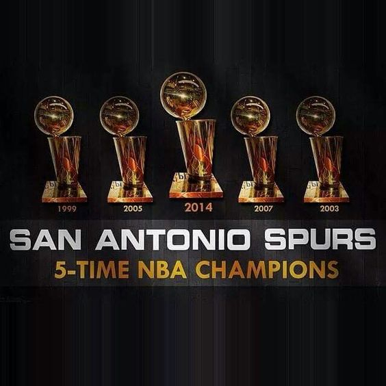

Ginásio
O ginásio atual da equipe é o AT&T Center, com capacidade para 18.418. Foi inaugurado em 2002 como SBC Center, e em janeiro de 2006
o nome foi alterado para AT&T Center pela união entre a SBC e a AT&T Inc.
Títulos

O San Antonio Spurs é 5 vezes campeão da NBA, com os títulos nos anos de 1999, 2003, 2005, 2007 e 2014, sempre reconhecidos
pelo basquete coletivo e altruísta do treinador Gregg Popovich.
Jogadores Históricos
O maior jogador da história do time é Tim Duncan, 5x campeão, eleito melhor jogador da temporada 2x e melhor jogador das finais 3x.
É o líder da história da franquia em pontos, rebotes e tocos.
Outros jogadores históricos da franquia são: David Robinson, Tony Parker, Manu Ginobili, George Gervin e Kawhi Leonard.